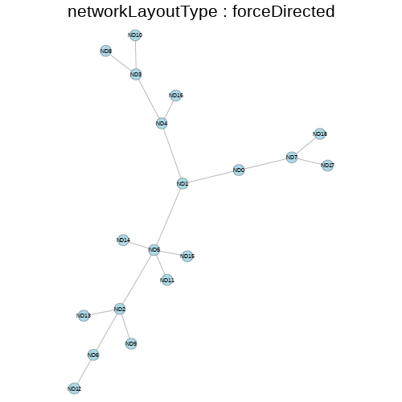
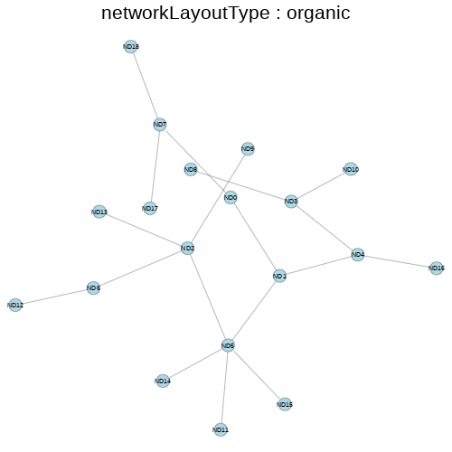
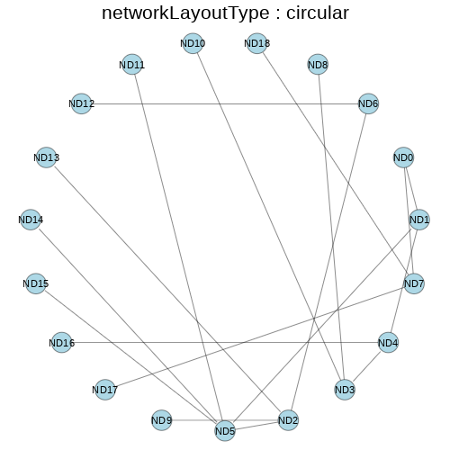
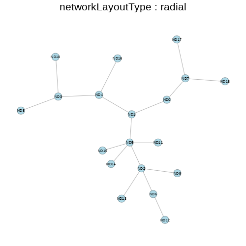
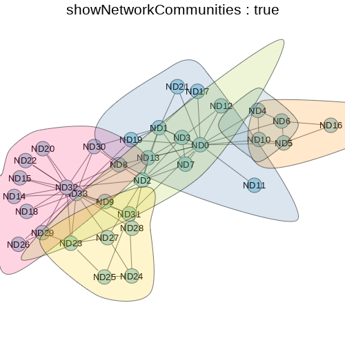
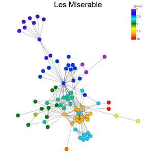
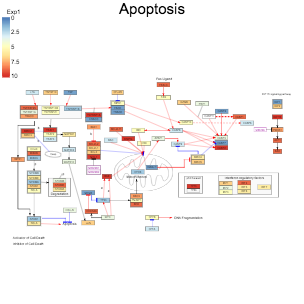
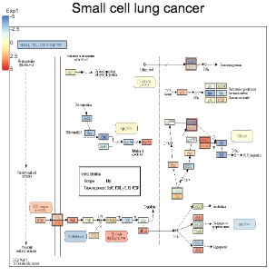
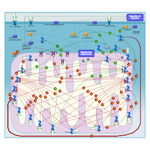
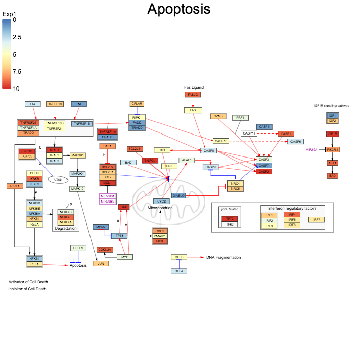

Visualizing Networks with CanvasXpress
More examples @ canvasXpress.org
Features
Open source JavaScript library
Used in a web environment or as an R package
Support for many standard data formats
Network Layouts




Network Communities
Louvain Method for community detection

Github: CanvasXpress for R

Installation
canvasXpress is available for installation from CRAN or you can install the latest version of canvasXpress from GitHub as follows:
devtools::install_github('neuhausi/canvasXpress')
-- R Examples and Resources --
#List all package vignettes
vignette(package = "canvasXpress")
#View a specific vignette
vignette("getting_started", package = "canvasXpress")
vignette("additional_examples", package = "canvasXpress")
- Shiny -
#List example names
cxShinyExample()
#Run an interactive shiny example
cxShinyExample(example = "example1")
CanvasXpress in R

CanvasXpress in R-Studio

CanvasXpress in a Shiny App

Some Shiny Code
library(shiny)
library(htmlwidgets)
library(canvasXpress)
shinyServer(function(input, output, session) {
# Combine the selected variables into a new data frame
selectedData = reactive({
iris[, c(input$xAxis, input$yAxis)]
})
output$plot = renderCanvasXpress({
smpAnnot = as.matrix(iris[,5])
colnames(smpAnnot) = "Species"
canvasXpress(selectedData(), graphType="Scatter2D", width=500, height=500, title="Iris Data")
})
})
library(shiny)
library(htmlwidgets)
library(canvasXpress)
shinyUI(pageWithSidebar(
headerPanel("Scatter Plot"),
sidebarPanel(
selectInput("xAxis", "X Axis", names(iris)[1:4]),
selectInput("yAxis", "Y Axis", names(iris)[1:4], selected=names(iris)[[2]])
),
mainPanel(
canvasXpressOutput("plot")
)
))
CanvasXpress in Flex Dashboard

Some Markup Code
---
title: "IPF Fibroblast data"
output:
flexdashboard::flex_dashboard:
orientation: rows
social: menu
source_code: embed
css: styles.css
runtime: shiny
---
```{r setup, include=FALSE}
library(knitr)
library(flexdashboard)
library(htmlwidgets)
library(canvasXpress)
library(dplyr)
source("supporting_plots.R")
loadData = function(filename) {
exData = readRDS(filename)
# format gene names: remove first underscore and all characters after that
gsub_expression = "_.*"
rownames(exData$Log2CPM) = gsub(gsub_expression, "", rownames(exData$Log2CPM))
exData$contrasts = lapply(exData$contrasts, FUN = function(x) {
rownames(x) = gsub(gsub_expression, "", rownames(x))
return(x)
})
exData
}
# load and prep the data
exData = loadData("data.rds")
gene_list = rownames(exData$contrasts[[1]])
```
Sidebar {.sidebar}
======================================================================
```{r}
selectizeInput("contrast", "Select Contrast", names(exData$contrasts))
selectizeInput("genes", "Select Gene(s)", gene_list, multiple = TRUE, selected = gene_list[1:2],
options = list(placeholder = "Type/Click then Select",
searchField = "value",
plugins = list('remove_button')))
ds1 = reactive({
exData$contrasts[[input$contrast]]
})
```
the rest of the Markup Code
Dashboard
======================================================================
Row {data-height=500}
----------------------------------------------------------------------
### Profile plot
renderCanvasXpress({
pp = ds1()
if (!is.null(pp)) {
profilePlot(pp, title = paste(input$contrast, sep = ""))
} else {
canvasXpress(destroy = TRUE)
}
})
```
### Volcano plot
```{r}
renderCanvasXpress({
vp = ds1()
if (!is.null(vp)) {
volcanoPlot(vp, title = paste(input$contrast, sep = ""))
} else {
canvasXpress(destroy = TRUE)
}
})
```
Row {data-height=500}
----------------------------------------------------------------------
### Explore genes
```{r}
renderCanvasXpress({
sel = input$genes
if (!is.null(sel)) {
dat = exData$Log2CPM
dat = dat[rownames(dat) %in% sel,,drop = FALSE]
des = exData$smpAnnot$ReplicateGroup
genePlot(dat, des, title = "Expression Plot")
} else {
canvasXpress(destroy = TRUE)
}
})
```
Supported Data Formats
- Native - JSON object
- GML - Graph Modelling Language
- XML
- GPML - Wikipathways
- KGML - Kegg
- XGML
Native JSON Format
var cX = new CanvasXpress("canvasId", {
nodes: [
{
id: "Node1",
color: "rgb(255,0,0)",
shape: "circle",
size: 1
}, {
id: "Node2",
color: "rgb(0,255,0)",
shape: "square",
size: 1.5
}, {
id: "Node3",
color: "rgb(0,0,255)",
shape: "triangle",
size: 2
}
],
edges: [
{
id1: "Node1",
id2: "Node2",
color: "rgb(125,125,0)"
}, {
id1: "Node1",
id2: "Node3",
color: "rgb(0,125,125)"
}, {
id1: "Node2",
id2: "Node3",
color: "rgb(125,0,125)"
}
]
}, {
graphType: "Network"
}
);
Parameters: (1) DOM id, (2) data, (3) config
Native JSON Format turns into a dataframe in R
library(canvasXpress)
nodes = "http://www.canvasxpress.org/data/cX-lesmiserable-nodes.txt"
edges = "http://www.canvasxpress.org/data/cX-lesmiserable-edges.txt"
canvasXpress(
nodeData = read.table(nodes, header=TRUE, sep="\t", quote="", fill=TRUE, check.names=FALSE, stringsAsFactors=FALSE),
edgeData = read.table(edges, header=TRUE, sep="\t", quote="", fill=TRUE, check.names=FALSE, stringsAsFactors=FALSE),
colorNodeBy = "group",
colorSpectrum = list("purple", "blue", "cyan", "green", "yellow", "orange", "red"),
edgeWidth = 2,
graphType = "Network",
nodeFontColor = "rgb(29,34,43)",
nodeSize = 30,
showAnimation = TRUE,
title = "Les Miserable"
)
XML is loaded from a URL
In JS...
var cX = new CanvasXpress("canvasId",
"https://path/to/file/hsa05222.xml", {
graphType: "Network"
}
);
In R...
library(canvasXpress)
canvasXpress(
data = "http://path/to/file/hsa05222.xml",
graphType = "Network"
)
Some Examples




Loading Experimental Data


The most difficult part is Bioinformatics!
Find the ids for all the nodes in the network
Associate those ids with the experimental data
Write a tab-delimited text file with the info
Loading Experimental Data
In JS...
var cX = new CanvasXpress("canvasId",
"https://path/to/file/hsa05222.xml", {
graphType: "Network",
appendNetworkData: [ "https://canvasxpress.org/debug/hsa05222.txt" ],
colorNodeBy: "Exp1"
}
);
In R...
library(canvasXpress)
canvasXpress(
data = "http://path/to/file/hsa05222.xml",
appendNetworkData = list("http://canvasxpress.org/debug/hsa05222.txt"),
colorNodeBy = "Exp1"
)
Showing Experimental Data

What about Reproducible Research?
Acknowledgements
Connie Brett - Maintainer of the R package
Aggregate Genius
Alex Ishkin - Export XML from Metabase
Clarivate
Ron Amar - Export all pathways from Metabase
BMS